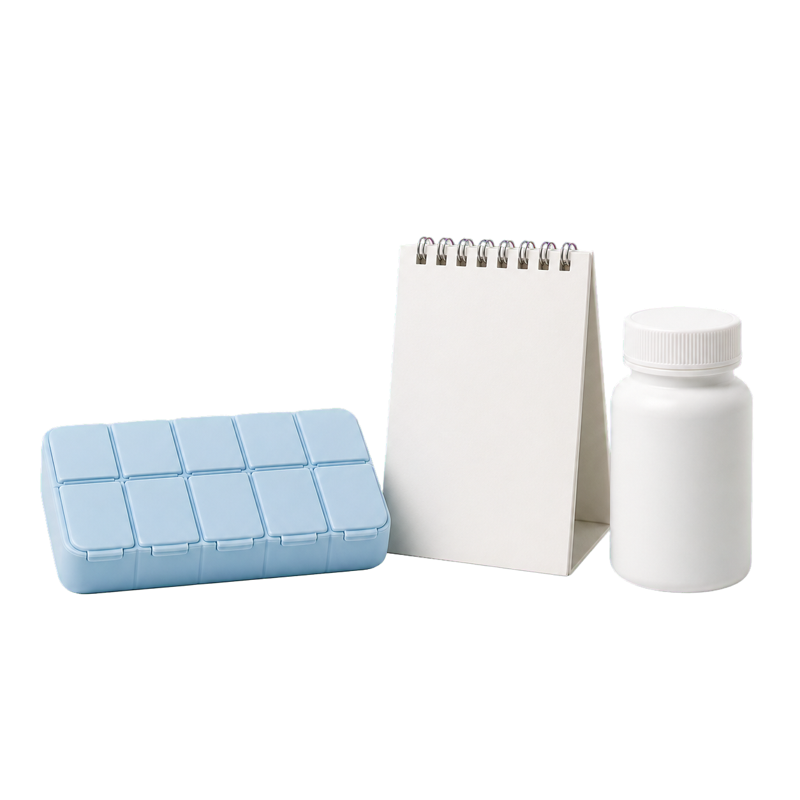

ขอบเขตการดูแล
ดูแลและให้คำปรึกษาตามความเชี่ยวชาญที่ระบุ โดยพิจารณาจากข้อมูลสุขภาพและแบบประเมินของผู้รับบริการ

ทีมแพทย์ Krane
ผู้อำนวยการแพทย์
ดูแลและให้คำปรึกษาตามความเชี่ยวชาญที่ระบุ โดยพิจารณาจากข้อมูลสุขภาพและแบบประเมินของผู้รับบริการ
แพทย์จะทบทวนข้อมูลก่อนเริ่มนัดหมาย และให้คำปรึกษาผ่านระบบออนไลน์ที่เป็นส่วนตัว
หากการปรึกษาทางไกลไม่เหมาะกับอาการ แพทย์อาจแนะนำการตรวจเพิ่มเติมหรือการพบแพทย์ด้วยตนเอง
วิธีที่เราทำงานร่วมกัน
ทุกขั้นตอนเริ่มจากข้อมูลสุขภาพจริงของผู้รับบริการ และผ่านการพิจารณาทางการแพทย์ก่อนเสนอทางเลือกที่เหมาะสม

แบบประเมินช่วยรวบรวมอาการ ประวัติสุขภาพ เป้าหมาย และข้อมูลสำคัญ เพื่อให้ทีมแพทย์เห็นภาพรวมก่อนเริ่มการปรึกษา
แพทย์ซักถามเพิ่มเติม อธิบายประโยชน์ ข้อควรระวัง และทางเลือกที่เป็นไปได้ โดยการสั่งยาขึ้นอยู่กับความเหมาะสมทางคลินิกของแต่ละคน

หลังเริ่มการดูแล ทีมแพทย์ใช้ข้อมูลติดตามผลเพื่อประเมินความคืบหน้า ความปลอดภัย และปรับแผนเมื่อสุขภาพหรือเป้าหมายของคุณเปลี่ยนไป
ข้อมูลวิชาชีพและความเชี่ยวชาญอ้างอิงจากข้อมูลที่ Krane Clinic จัดเตรียม และอาจมีการอัปเดตเพิ่มเติม